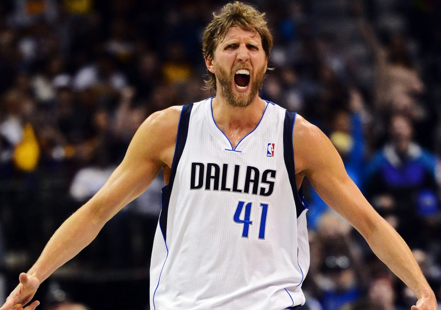
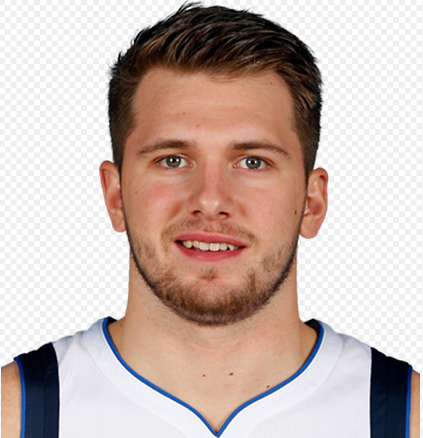

Mavericks

The Dallas Mavericks (often referred to as the Mavs) are an American professional basketball team based in Dallas. The Mavericks compete in the National Basketball Association (NBA) as a member of the Western Conference Southwest Division. The team plays its home games at the American Airlines Center, which it shares with the National Hockey League's Dallas Stars. Throughout the 1980s, the Mavericks were a perennial playoff team, led by All-Stars Rolando Blackman and Mark Aguirre. The team struggled during the 1990s, entering into a period of rebuilding. In 1998, the franchise's fortunes would change drastically with the acquisition of Dirk Nowitzki, who would become the cornerstone of the most successful period in franchise history, leading the team to its first NBA championship in 2011. The Mavericks later entered a rebuilding phase in the tail end of Nowitzki's storied career. They missed the playoffs in three consecutive years from 2017 to 2019, after which Nowitzki retired following his record-breaking 21st season with Dallas. After acquiring the eventual 2019 Rookie of the Year Luka Dončić in the 2018 NBA draft and trading for All-Star Kristaps Porziņģis in 2019, the Mavericks, led by their two young European stars, returned to the playoffs in 2020. As of December 2019, the Mavericks have sold out 731 consecutive games since December 15, 2001, the longest currently running sellout streak in North American major league sports. When combined with the 67 sold-out playoff games during that span, the American Airlines Center has been sold out for 798 consecutive games. Since their inaugural 1980–81 season, the Mavericks have won three division titles (1987, 2007, 2010), two conference championships (2006, 2011), and one NBA championship (2011).
Dirk Werner Nowitzki (born June 19, 1978) is a German former professional basketball player. Listed at 7 ft 0 in (2.13 m), he is widely regarded as one of the best power forwards of all time and is considered by many to be the greatest European player of all time. An alumnus of the DJK Würzburg basketball club, Nowitzki was chosen as the ninth pick in the 1998 NBA draft by the Milwaukee Bucks and was immediately traded to the Dallas Mavericks, where he played his entire 21-year National Basketball Association (NBA) career. Nowitzki led the Mavericks to 15 NBA playoff appearances (2001–2012; 2014–2016), including the franchise's first Finals appearance in 2006 and its only NBA championship in 2011. Known for his scoring ability, versatility, accurate outside shooting, and trademark fadeaway jump shot, Nowitzki won the NBA Most Valuable Player Award in 2007 and the NBA Finals Most Valuable Player Award in 2011. Nowitzki is the only player ever to play for a single NBA franchise for 21 seasons. He is a 14-time All-Star, a 12-time All-NBA Team member, the first European player to start in an All-Star Game, and the first European player to receive the NBA Most Valuable Player Award. Nowitzki is the highest-scoring foreign-born player in NBA history. He is the first Maverick voted onto an All-NBA Team and holds several all-time Mavericks franchise records. On December 10, 2012, he became the first non-American player to receive the Naismith Legacy Award. Following his retirement, Nowitzki stood sixth on the list of National Basketball Association career scoring leaders. In international play, Nowitzki led the German national basketball team to a bronze medal in the 2002 FIBA World Championship and silver in EuroBasket 2005, and was the leading scorer and MVP in both tournaments.
Luka Dončić ( born February 28, 1999) is a Slovenian professional basketball player for the Dallas Mavericks of the National Basketball Association (NBA) and the Slovenian national team. Born in Ljubljana, Dončić shone as a youth player for Union Olimpija before joining the youth academy of Real Madrid. He debuted for their senior team in 2015, at age 16, becoming the youngest in club history. Two years later, he led Madrid to the 2018 EuroLeague title, winning the EuroLeague MVP as well as the Final Four MVP. Dončić was also named the ACB Most Valuable Player and won back-to-back EuroLeague Rising Star and ACB Best Young Player awards. He was selected to the EuroLeague 2010–20 All-Decade Team. In 2018, Dončić declared for the NBA draft, joining the Dallas Mavericks. He was selected unanimously to the NBA All-Rookie First Team and won Rookie of the Year for the 2018–19 season. In his sophomore season, he was selected to his first NBA All-Star game and named to the All-NBA First Team. A Slovenian international, Dončić made his senior debut for Slovenia in 2016 at only 17 years of age; he would later be named to the All-Tournament Team after helping his country win its first EuroBasket title in 2017.